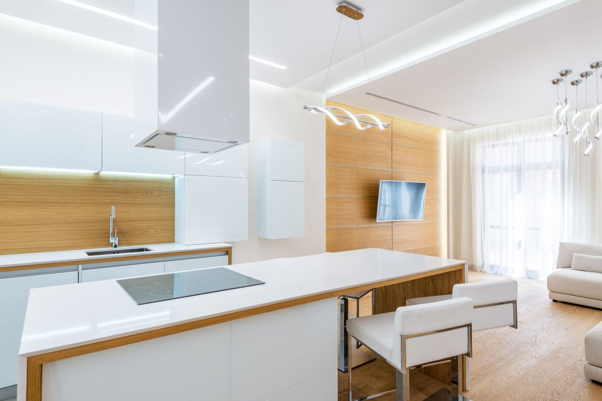
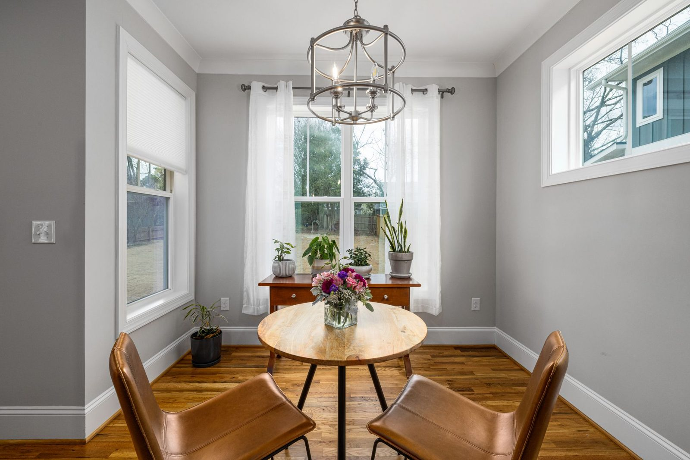
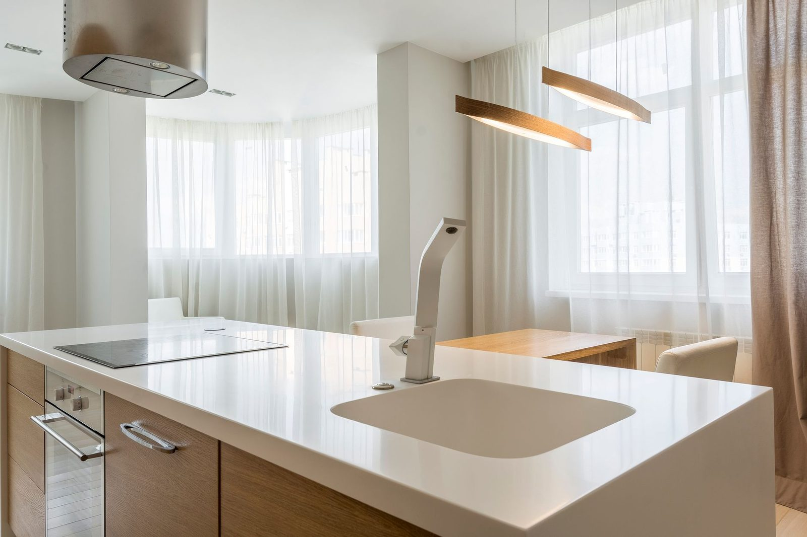

Project gallery
Six kitchens, six very different briefs
Every one designed by Dana & Priya, built by Marco's crew, and delivered on the fixed price we quoted. Here's a cross-section of recent handovers across the southern Gold Coast.

A dark 90s kitchen opened up to the ocean breeze with white shaker cabinetry, a sea-glass splashback and an oak-topped island. The rattan pendants were Priya's idea — now they're the first thing every visitor mentions.

Full Reno for a growing family who wanted classic Hamptons without the fuss — navy island, glass-front uppers and brass cup handles. The panelled rangehood canopy was built in our West Burleigh workshop.

Handleless oak joinery floor to ceiling, one long stone monolith and not a single visible appliance. Proof that a calm kitchen can still feed a household of five every night of the week.

Our Luxe package at full stretch: bookmatched Corella Stone slabs, deep green cabinetry and brass everywhere the light lands. The under-cabinet glow strip makes it a different room again at night.

Seven square metres in a hilltop apartment, reworked with floor-to-ceiling sage joinery and a slimline peninsula. Every centimetre earns its keep — including stools that fold flat under the bench.

A servery window and outdoor bench turned this valley home into the family's permanent Christmas venue. The gas-strut window and hardwood servery were detailed to shrug off coastal weather.
Like the look of one of these?
Tell us which project caught your eye and we'll bring the finishes samples to your design consultation.